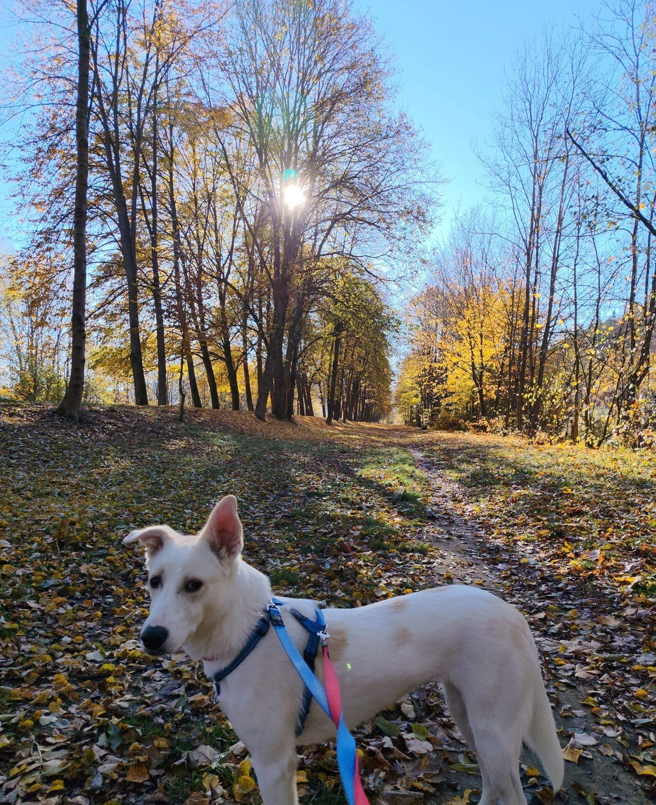

Bella
One family rescued. Every one of them home.
Bella was rescued in Jordan together with her mother, Beige, her brothers Kouvo and Bruno, and her sisters Vanilla and Aliksa: a whole little family, taken off the street and finally safe.
We cared for them through treatment, vaccines and growing up. Then, one by one, every single one of them found a loving family. It is one of the most beautiful stories we have ever lived.
Bella flew from Jordan to her new home in the Czech Republic. Today she walks through autumn forests, naps in her own bed surrounded by toys, and has very strong opinions about stuffed animals.
Her family still sends us photos and updates from time to time, and every one of them reminds us why we do this.
Rescued together
Bella's mother, two brothers and two sisters all found loving homes too.
Meet Beige, Bella's mom
The mother who started it all. Beige raised her five babies through the hardest start, and today she has a cozy home and a family of her own too.
Bella today
Write the next happy tail
More rescues like Bella are waiting for their family, anywhere in the world.